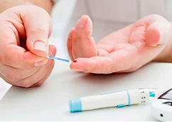
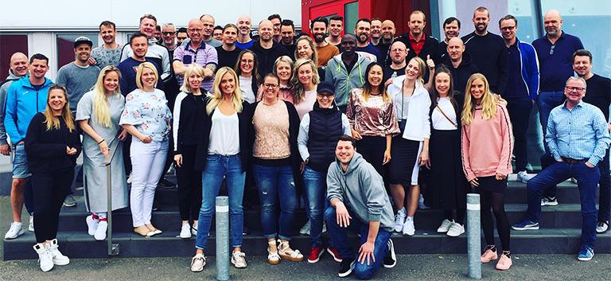
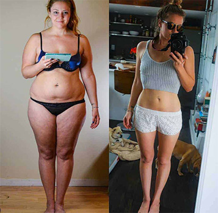
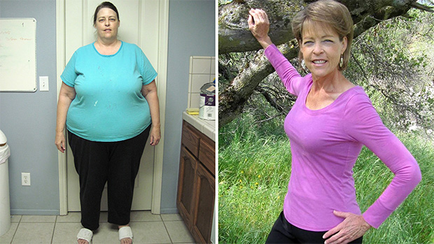

Balso sutrikimai – sunkios ligos simptomas
Maitinimas krūtimi siaučiant koronavirusui ir gripui
Antsvoris ir antros grupės diabetas: išgyvenusiojo klaida
PSO duomenimis, antsvorio turi 39 % pasaulio žmonių. Deja, tai ne tik estetinė problemą, bet ir rimta grėsmė jūsų sveikatai.
Pašaliniai kilogramai gali privesti prie širdies ir kraujagyslių sistemos ligų, cukrinio diabeto, kaulų ir raumenų aparato susirgimų, problemų su kvėpavimu. Taip pat nukenčia jūsų pasitikėjimas savimi, o tai tiesus kelias į depresiją ar net mintis apie savižudybę!
Kaip atsikratyti antsvorio visam laikui?
Ar galima sulieknėti be sporto ir dietų?
Į šiuos ir kitus klausimus atsakė Harvardo medicinos mokyklos studentė, nutriciologijos tyrėja ir inovacinės riebalus deginančios priemonės kūrėja – Laura Gronauskienė.
Iki šios dienos, Lauros išradimas jau padėjo tūkstančiams žmonių visame pasaulyje.
Korespondentas: Laura, prieš kelerius metus jūs laimėjote stambią Harvardo dotaciją tyrimams ir galėjote užsiimti, kuo norėjote. Todėl pasirinkote nutriciologiją? Juk esate ganėtinai liekna mergina.
Laura: Ačiū. Iš tiesų, gavę dotaciją, daugelis Harvardo medicinos mokyklos profesorių norėjo dirbti kartu su manimi, tačiau aš pasirinkau savarankišką kelią. Kodėl nutriciologija? Naivu, tačiau aš tiesiog norėjau padėti savo mamai. Jos gyvenimas buvo nelengvas – tėvas paliko mus vykstant 2008 metų krizei, kai mes su brolio dar buvome maži. Ji dirbo dieną ir naktį, kad galėtų mus išmaitinti. Suprantama, apie sveiką mitybą ar sportą nebuvo ir kalbos – todėl visas greitasis maistas palikdavo savo pėdsakus ant juosmens ir klubų. Pas mamą atsirado daug kompleksų, ji numojo ranka į asmeninį gyvenimą. Tačiau tai nėra teisinga, nepriklausomai nuo amžiaus moteris turi likti moterimi. Mama išbandė daugybę priemonių, įvairias lieknėjimo tabletes, arbatas, ekstremalias dietas, tačiau visi numesti kilogramai greita sugrįždavo. Todėl aš pradėjau aktyviai studijuoti šį klausimą. Laimei, medicininis išsilavinimas leidžia įdėmiau pasižiūrėti į cheminį riebalų deginimo procesų lygį.
Korespondentas: Ir ką jūs sužinojote?
Laura: Trumpai – tai, ką mes žinome apie lieknėjimą, neveikia. Kalorijų skaičiavimas toli gražu ne visada suteikia norimą poveikį – visi mes pažįstame stambių moterų, kurios valgo nedaug, palaiko aktyvų gyvenimo būdą, o svorio numesti negali. O viskas priklauso ne nuo kaloringumo, apie kurį visi šneka, o apie metabolizmo procesus – kur organizmas ima energiją ir kaip ją naudoja. Stebina tai, kad mes galime priversti organizmą energiją imti ne iš jam įprastų angliavandenių, o iš riebalų. Mūsų riebalinių sankaupų. Kūnai, kuriuos tokiu atveju ląstelės naudoja mitybai, vadinasi ketonais, o pats procesas – ketozė. Įprastai, kai baigiasi angliavandenių atsargos, kūnas pamažu transformuoja riebalų ir raumenų liaukas į gliukozę. Ketozės atveju, riebalų sankaupos akimirksniu transformuojamos į energiją. Paprasčiau tariant, mes lieknėjame, o organizmas toliau įprastai funkcionuoja.
Korespondentas: Netikėta! Ir kaip aktyvuoti šį procesą?
Laura: O čia prasideda visas įdomumas. Ketozei negalima tiesiog paimti ir apriboti angliavandenių kiekį – nors iš pradžių būtent tai aš siūliau savo mamai. Ji kurį laiką drąsiai laikėsi Diukano dietos, valgydama vištų krūtinėles ir salotų lapus, tačiau galiausiai nesusilaikydavo. Aš jos nekaltinu, nei vienas normalus žmogus negalės nuolatos jausti alkį, silpnumą ir didėjantį susierzinimą. Galiausiai vis tiek įvyksta nesusilaikymas, nekontroliuojamas valgymas, kaltės jausmas, dėl kurio vėl valgoma – ir taip iš naujo. Kai mes tiesiog apribojame angliavandenius ir niekuo jų nepakeičiame, tai faktiškai badavimas, o jis dar niekam nepadėjo sulieknėti ir išsaugoti pasiektus rezultatus.
Visai kitas dalykas – keto dieta. Tai mityba su dideliu kiekiu riebalų, kur baltymus mes valgome kaip įprastai, o angliavandenius apribojame. Ši kombinacija gali visiškai pakeisti energijos apykaitą – ir mūsų riebalai lengvai suskaidomi į riebalų rūgštis ir ketoninius kūnus, kas aktyvuoja riebalų deginimo procesą. Keto idėja nėra nauja, dar praeito amžiaus trečiajame dešimtmetyje (o tai beveik prieš šimtą metų!) gydytojas Raselas Vailderis pastebėjo ypatingas ketoninių kūnų savybes. Tiesa, jis tai naudojo epilepsijos priepuolių gydymui.
Korespondentas: Tai yra, galima sakyti, kad keto dieta efektyvi tik lieknėjant?
Laura: Teisingai! Šiandien toks mitybos būdas taip pat naudojamas gydant migreną, cukrinį diabetą, metabolinį sindromą ir net Alzheimerį. Nenuostabu, kad žinodami apie tai, žmonės siekia palaikyti ketozės būseną organizme, kad padidintų darbingumą, fizines jėgas ir, žinoma, sulieknėtų.
Korespondentas: Stebėtina. Ir ką, viskas taip paprasta, nėra jokių sunkumų laikantis tokios mitybos?
Laura: Labai teisingą klausimą uždavėte. Ruošdama mokslinį darbą ketozės tema, aš vis labiau įsitikindavau, kad toks mitybos būdas tinka visiems ir praktiškai neturi šalutinių poveikių. Jis negali pakenkti ar nesuveikti. Tačiau juk aš turėjau ne tik darbą laboratorijoje, bet ir tikrą testo subjektą – savo mamą. Mamai ganėtinai patiko lieknėti su keto mityba, ji nejautė jokio alkio jausmo ar nesusilaikymo, o per pirmą mėnesį numetė visus 16 kg, tačiau... tai vis dėlto ypatingas mitybos būdas. Reikia kontroliuoti savo racioną, kad būtų gaunama būtina naudingųjų riebalų dozė (ne visi riebalai vienodai naudingi). Ir kur kas paprasčiau užkasti angliavandeniais, nei rasti tinkamų riebalų šaltinį. Vadinasi, mes vėl grįžome prie mitybos įpročių keitimo problemos. Gaminimas taip pat reikalauja daug laiko – kai dirbi visą dieną, tai nėra išeitis.
Aš pradėjau svarstyti, kaip organizuoti mitybą taip, kad būtų aktyvuotas ketozės procesas, tačiau nereikėtų smarkiai keisti įpročių. Čia man padėjo profesorius Hovardas Grynas, mano mokslo darbo vadovas. Jis iš karto patarė pagalvoti apie maisto papildą, kuris aktyvuotų ketoninius kūnus ir, tokiu būdu, aktyvuotų ketozę. Mes iki išnaktų sėdėjom laboratorijoje maišydami įvairius ingredientus ir dirbdami su jais. Ir štai, po kelių mėnesių, mūsų riebalus deginantis kokteilis buvo paruoštas.
Korespondentas: Kokteilis? O kas yra jo sudėtyje?
Laura: Taip, jūs tiesiog paruošiate šiuos miltelius ir gaunate kokteilį. Kalbant apie sudėtį, nemanau, kad galiu apie tai kalbėti. Nesąžiningos farmacijos įmonės taip ir laukia, norėdamos sukurti kažką panašaus ir prekiauti su didžiuliu antkainiu. Mes netgi susidūrėme su šnipinėjimo bandymu! Todėl tik galiu pasakyti, kad sudėtis yra 100 % natūrali. Joje nerasite nieko egzotiško, visa paslaptis slypi komponentų sinergijoje, kiekvienas iš jų stiprina kitus. Ir, žinoma, jokių dirbtinių saldiklių, dažiklių ar konservantų. Todėl galite būti ramūs dėl savo sveikatos. Mes turime visus kokybės sertifikatus, taip pat jų tyrimų rezultatus.
Laikas pasikalbėti su profesoriumi Grynu, Lauros Gronauskienės mokslo darbo vadovu.
Hovardas Grynas – biochemijos ir molekulinės biologijos mokslų daktaras, vyriausiasis Metabolic Health Unit ekspertas, pakviestas profesorius iš Endokrinologijos, diabeto ir metabolizmo klinikos Harvardo medicinos mokykloje, garbingas nutriciologas iš JAV.
Hovardo sąskaitoje – 25 moksliniai darbai, kurių rezultatais naudojasi dietologai iš JAV, Vakarų Europos ir Austraijos.
Korespondentas: Profesoriau Grynai, sveiki! Laura mums jau papasakojo apie tai, kaip jūs kartu sukūrėte keto kokteilį. Ar galite išsamiau papasakoti apie klinikinius tyrimus?
Profesorius Grynas: Sveiki. Taip, Laura labai talentinga mergina ir labai maloni. Norėjo padėti mamai, o padėjo šimtams, ne, tūkstančiams moterų ir vyrų visame pasaulyje. Taip, vyrai ne labai linkę pasakoti apie savo lieknėjimą, tačiau patikėkite, jie taip pat nori būti liekni ir gražūs – ir su minimaliomis pastangomis.
Taigi, grįžtant prie tyrimų. Mes išrinkome 80 pacientų (22 vyrai ir 58 moterys), kuriu KMI didesnis už 35. Visi jie toliau palaikė įprastą mitybą, o tarp valgymų vartojo kokteilį – du kartus per dieną. Be to, tarp tiriamųjų buvo ir Laima, Lauros mama. Per pirmas 4 savaites jie vidutiniškai numetė po 17 kg, o maksimalus rezultatas buvo 22 kg. Tačiau mes nesidžiaugėme anksčiau laiko – daugelis preparatų ir dietų suteikia greitus rezultatus, o vėliau lieknėjimas sulėtėja, kartais net vėl pradeda augti svoris. Todėl buvo svarbu stebėti antro ir trečio tyrimo mėnesių dinamiką. Mūsų nuostabai, skaičiai nors ir buvo kiek mažesni, tačiau vis tiek liko nemaži – 13 ir 10 kg atitinkamai. Aš tai sieju su tuo, kad tiriamieji pradėjo artėti prie savo įprasto svorio.
Vienas iš privalumų yra tai, kad jūs nenumesite daugiau, negu reikia. Sunyksta tik riebalinių audinių perteklius, todėl nereikia nerimauti dėl sveikatos. Jie dingsta – ir daugiau neatsiranda. Bent jau į tai nurodo tyrimų rezultatai. Tik pasižiūrėkite, kokia gražuole tapo Laima Gronauskienė.
Profesorius Grynas: Tačiau maloniausia tai, kad rezultatai po vartojimo buvo net geresnis, nei kitų tyrimų, kur žmonės laikėsi klasikinės keto dietos. Manau paslaptis slypi tame, kad laikytis mitybos su mažu angliavandeniu kiekiu yra ganėtinai sudėtinga... Sunku atsisakyti picos, kai esi su draugais, arba deserto. O visai kitas reikalas – gerti skanų riebalus deginantį kokteilį ir niekaip nekeisti savo raciono.
Korespondentas: Ką jūs turite omenyje?
Profesorius Grynas: Viskas paprasta, laikydamiesi įprastos keto dietos, žmonės neiškenčia, o vartojant kokteilį tokios problemos nėra. Supraskite, jeigu viskas būtų taip paprasta, mes neturėtume JAV ir Lietuvoje, iš kur kilusi Laura, apie 38,2% žmonių su nutukimu. Internete daugybė informacijos apie teisingą mitybą, tačiau žinojimas ir laikymasis – du skirtingi dalykai. Todėl kalbant apie mitybą ir gyvenimo būdą, neįmanoma užtikrinti eksperimento skaidrumo!
Laura Gronauskienė ir Hovardas Grynas maloniai suteikė mums prieigą prie tiriamųjų kontaktų, kad mes galėtume asmeniškai įsitikinti vartojimo efektyvumu.
„Pagaliau atėjo tas laimingas laikas, kai nebijau pasakyti savo amžiaus. Taip, man iš tiesų 25 metai, o ne 40, kaip galima būtų pasakyti žiūrint į senas nuotraukas. Laura – mano klasioke ir sena draugė. Ji viską žinojo apie mano problemas su svoriu ir pasitikėjimu savimi, todėl vos tik išradusi formulę – iš karto man paskambino ir pasiūlė sudalyvauti eksperimente. Aš nudžiugau, juk neturiu ko prarasti – ir sveikata, ir išvaizda buvo itin blogos būklės. Ir štai ką jums pasakysiu, ne tik padėjo atsikratyti 27 kg, bet taip pat atstatyti sveikatą. Cholesterolio lygis normoje, cukraus taip pat, lėtinis nuovargis, su kuriuo kovojau nuo kolegijos pradžios, praėjo. Jau praėjo 2 metai nuo tyrimų momento, o aš nepriaugau nei vieno kilogramo. Svoris lieka vietoje!"
„Mano amžiuje bet kokie pokyčiai yra sunkūs, o kaip sako gydytojai, medžiagų apykaita jau ne ta. Šeimos gydytojas, žinodamas apie mano nuolatinius bandymus susigriebti, papasakojo apie naujo lieknėjimo preparato bandymus. Na, jei nemokama, tai kodėl gi ne. Be to, viską stebės gydytojai, vadinasi tai saugu. Aš labai nudžiugau, kai atitikau visus parametrus – tai buvo ženklas iš viršaus, kad dabar gyvenimas pasikeis. Taip ir buvo: -33 kg, kurie kaupėsi nuo pirmos dukros gimimo, pradėjo tirpti tiesiog akyse. O man ir nereikėjo nieko daryti – valgai mėgstamus makaronus, geri vyną, nepamirštant apie – ir viskas. Dieve, palaimink tą mergaitę Laurą, jos išradimas pakeitė mano gyvenimą. Dabar neatrodo lyg griūčiau su kiekvienu žingsniu, dabar aš skraidau.“
„Kiek save pamenu, visada buvo apkūnus. Nors paragauti nesveiko maisto leisdavau sau tik išeiginėmis, o visomis darbo dienomis daug dirbau ir vaikščiojau į sporto salę. Buvo apmaudu įdėti tiek darbo ir nematyti progreso. Kai sužinojau apie programą, manyje lyg kažkas spragtelėjo. Per visus šiuos metus aš perskaičiau gausybę literatūros apie mitybą, todėl iš karto supratau riebalus deginančio kokteilio veikimo principą. Prieš tai netgi bandžiau laikytis keto dietos! Tačiau tai sudėtinga – jokių angliavandenių, vien riebalai ir šiek tiek baltymų. Todėl labai apsidžiaugiau dėl tokio revanšo! O jis visgi nutiko – aš numečiau 26 kg, pakeičiau darbą ir ten sutikau savo busimą nuotaką. Ji turi sultingas formas (kurios jai labai tinka), tačiau nori iki vestuvių sulieknėti, todėl aš jai parekomendavau . Šaunu pačiam lieknėti, tačiau dar maloniau matyti mylimo žmogaus progresą!”

Korespondentas: Laura, manau dabar visiems iškilo klausimas: kur galima įsigyti ?
Laura: Kaip jau sakiau, dirbti su tarpininkais nesaugu – gali taip užkelti kainą, kad bus prieinamas tik verslininkams ir politikams. O aš noriu, kad ir įprasti žmonės galėtų pagerinti savo savijautą ir tapti patrauklesni patys sau. Todėl visi norintys gali įsigyti oficialiame tinklalapyje ir būti tikri, kad tai originalus produktas. Klastočių labai daug, nerizikuokite savo sveikata!
Korespondentas: O kodėl kaina tokia žema?
Laura: Mes nekėlėme sau tikslo užsidirbti su . Tačiau vėliau pagalvojome, kad galime padaryti nuolaidą ir gautus pinigus panaudoti kitos, ne mažiau svarbios problemos tyrimams. Siekdami svajonių figūros daugelis pasitelkia dietas ir sudėtingas treniruotes, kuo priveda save prie nervinės anoreksijos. Aš noriu padėti šiems išsekusiems merginoms ir vaikinams – sukurti preparatą, kuris vienu metu normalizuoja metabolizmą ir padeda atstatyti nervų sistemą. Kartu su psichiatro pagalba tai turi suteikti puikius rezultatus ir grąžinti jaunuolius į gyvenimą.